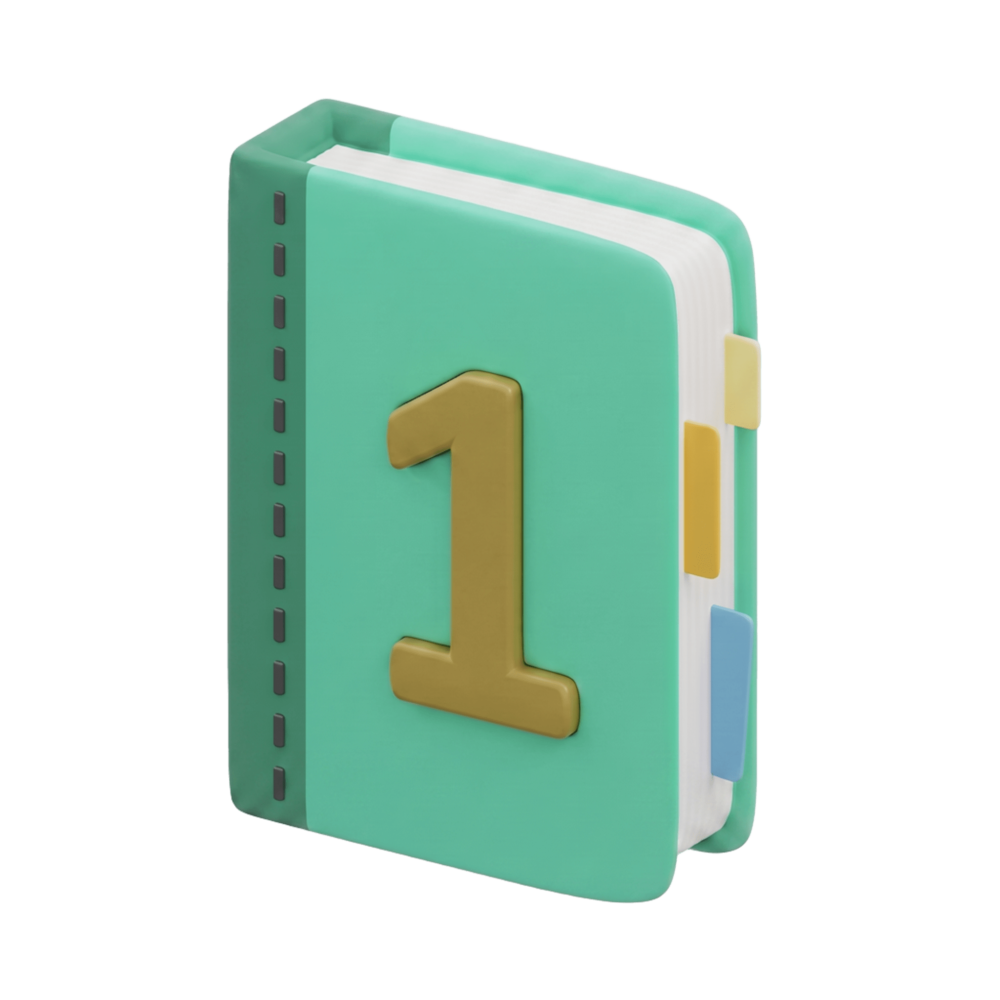
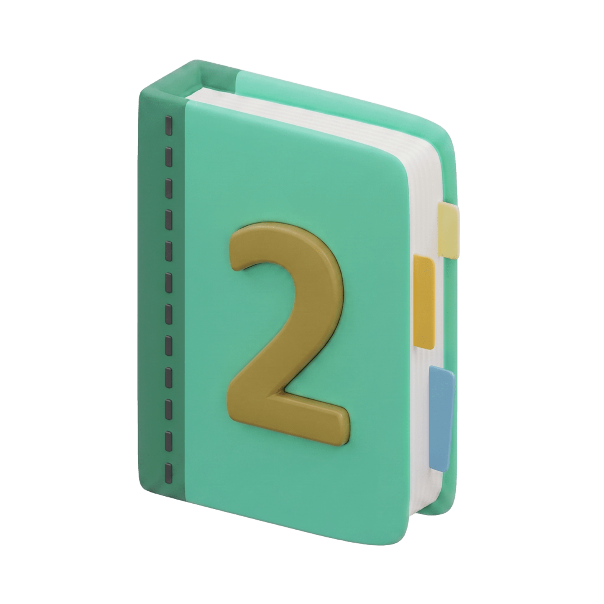
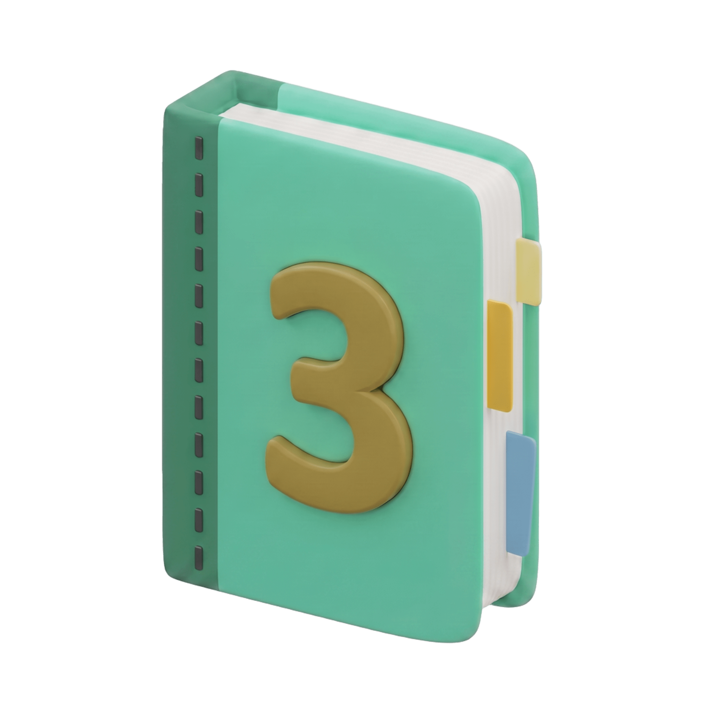
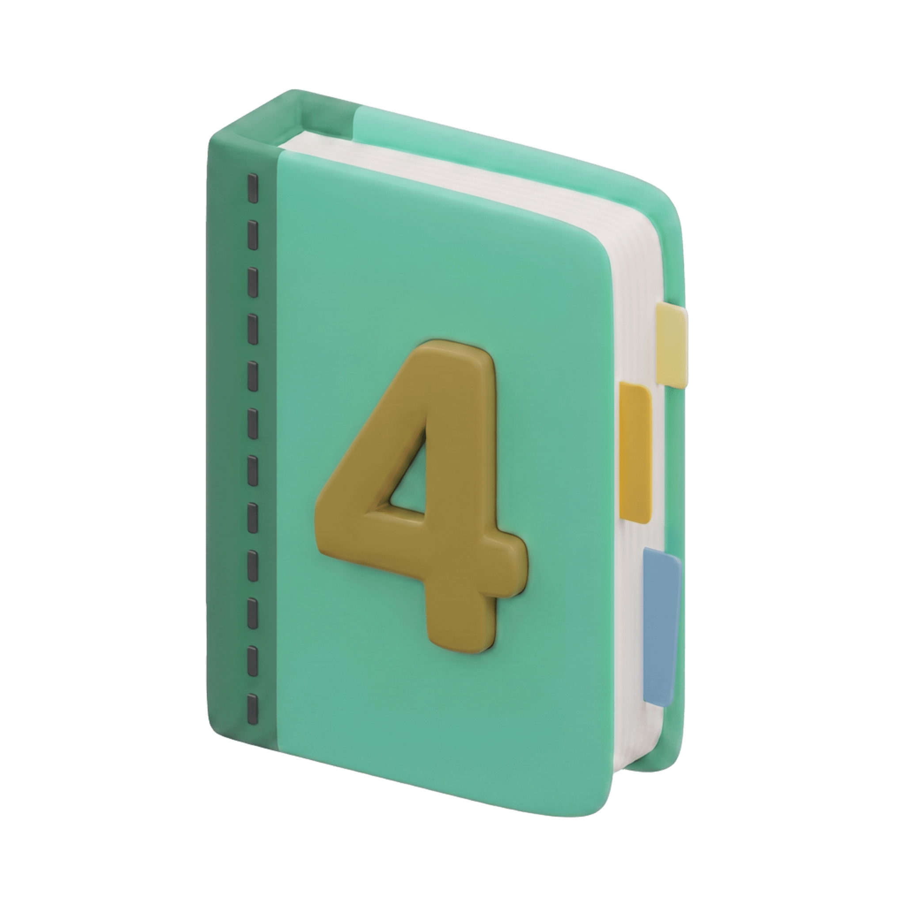
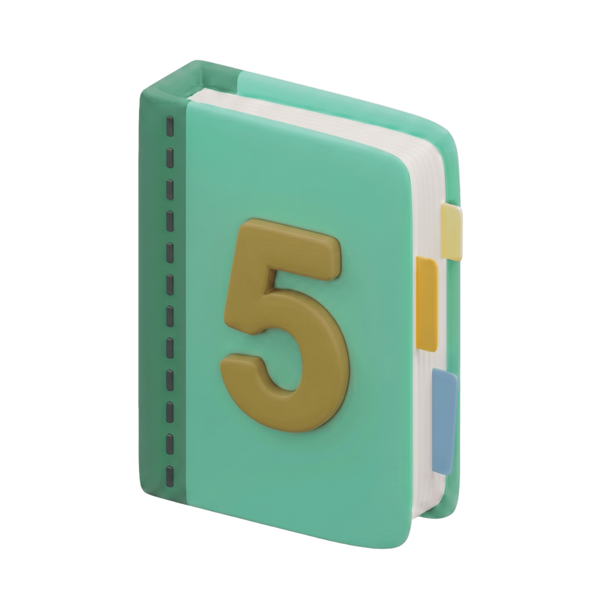
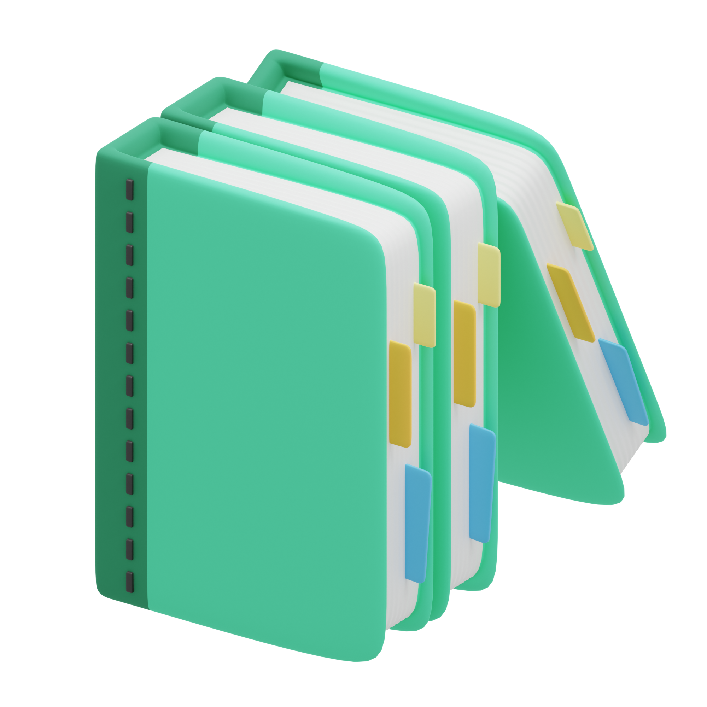
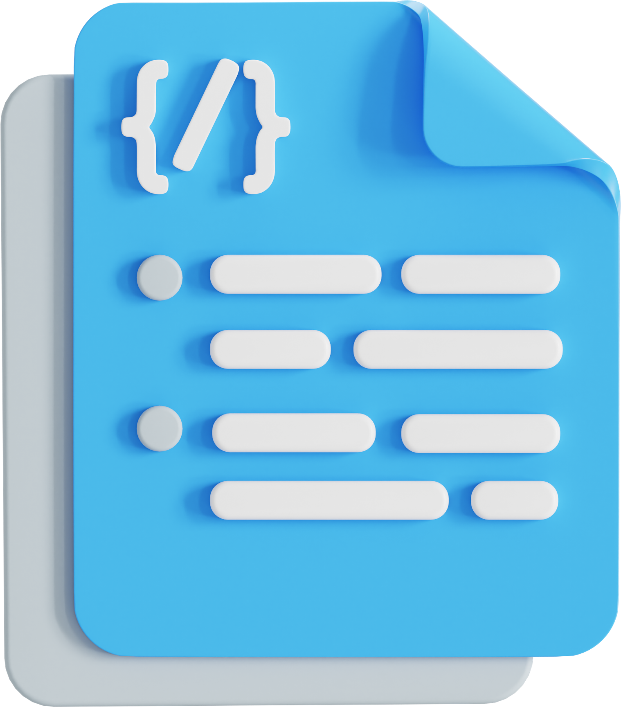
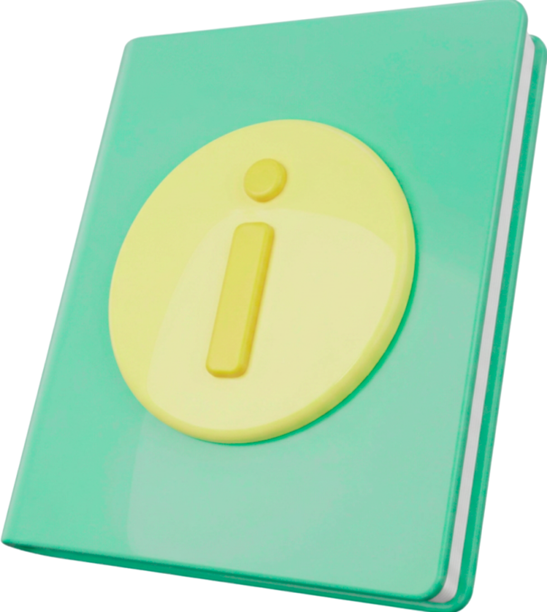

Panduan praktis bagi guru untuk mengembangkan media pembelajaran berbantuan Artificial Intelligence.





Pilih modul yang ingin Anda pelajari atau gunakan. Modul dirancang agar saling melengkapi untuk pengalaman belajar yang komprehensif.

Pelajari konsep dasar AI, tools generatif, dan strategi implementasinya dalam pembelajaran.

Temukan template prompt siap pakai untuk memudahkan membuat media pembelajaran
Gunakan instrumen interaktif untuk menilai kualitas media pembelajaran yang telah Anda buat.

Kenali latar belakang pengembangan e-modul, profil pengembang, dan referensi yang digunakan.
Setelah mempelajari seluruh materi pada e-modul ini, Anda diharapkan mampu memahami, merancang, dan mengevaluasi media pembelajaran berbasis AI dengan efektif dan etis.
Lihat Seluruh MateriMemahami konsep dasar AI dan relevansinya dalam konteks pendidikan modern.
Mengenal berbagai AI tools yang efektif untuk merancang media pembelajaran interaktif.
Mampu menyusun prompt (perintah) yang presisi untuk menghasilkan output AI yang berkualitas.
Mengevaluasi kelayakan media pembelajaran AI yang telah dibuat berdasarkan standar pedagogik.
Ikuti langkah-langkah berikut untuk mendapatkan hasil maksimal dari pembelajaran menggunakan e-modul ini.
Mulai dengan membaca BAB 1 hingga 5 secara berurutan untuk memahami teori dan praktik. Setiap akhir bab terdapat kuis interaktif.
Buka halaman Kumpulan Prompt dan salin template yang sesuai dengan mata pelajaran Anda. Modifikasi variabelnya.
Gunakan tools AI generatif (seperti ChatGPT, Canva AI, dll) untuk memproduksi komponen media pembelajaran Anda.
Gunakan instrumen Evaluasi untuk menilai apakah media yang Anda hasilkan sudah memenuhi kelayakan pedagogik.
Mulai perjalanan Anda sekarang dalam mengintegrasikan kecerdasan buatan ke dalam ruang kelas Anda.
Mulai Pembelajaran